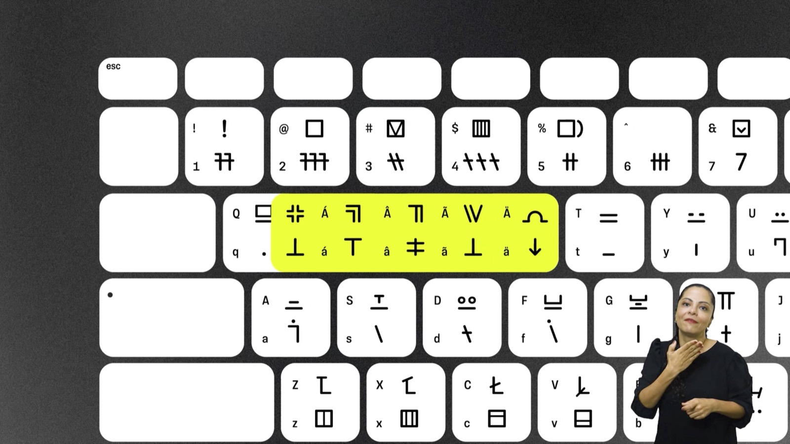

HOW THE SCRIPT AND THE FONT CAME TO BE
The story of ELiS
Linguist Mariângela Estelita Barros created ELiS in 1998 to write sign languages. This is the story of that script, from notebook to keyboard.
- tgfingers
- çpalm
- Qplace: face
- Ämovement
tgçQÄ. Example from Barros (2016).In 1990, a third-year literature student in Goiânia, in central Brazil, noticed a commotion in her faculty’s auditorium and went to look. A Deaf teacher was signing on stage while two hearing colleagues took turns translating. But it was the audience that caught her. Rows of Deaf people were chatting animatedly, “without sound, with their hands”, as she thought of it then. The following week, Mariângela Estelita Barros enrolled in the first Libras course ever offered in the state of Goiás, run by Edson Franco Gomes, a Deaf pioneer of Libras teaching.
She already spoke five languages. Brazilian Sign Language left her lost. “I looked and didn’t see,” she writes. She didn’t know what made a difference in meaning and what didn’t.
That question would shape the next 35 years of her life. Why did Libras, the language of Brazil’s Deaf community, have no written form that people actually used?

What does it mean to speak a language you cannot write? It means learning to read in someone else’s language. Watching stories told with the hands vanish when the hands stop. Getting every school test and every form at the health clinic in a language that is not your own.
That is still the reality for most Deaf people in Brazil. According to the country’s statistics institute, IBGE, between 2.3 and 2.5 million Brazilians are deaf or have great difficulty hearing. Libras has been recognised by law since 2002. But children who sign it are still taught to read and write in Portuguese, a language built on sound.
“They experience the world visually, and Portuguese is not a visual language.”
A script written by hand
As a master’s student she set out to describe the language: every handshape, every movement, every place on the body where a sign happens. She did all of it on paper. She only bought her first computer at the very end of her master’s, just in time to learn to type her dissertation.
Out of those notebooks came an idea. If every sign is made of a limited set of parts, those parts could be written, one after another, like letters. In 1998 she presented a writing system that did exactly that. The first text she ever wrote in it was the anthem of the Deaf Association of Goiânia. Today it is called ELiS, short for Escrita das Línguas de Sinais, “Writing of Sign Languages”.
- 96visographemes
- 10finger configuration
- 6palm orientation
- 35point of articulation
- 45movement
Barros calls its characters visographemes. Written in that fixed order, fingers, palm, point of articulation and movement, they spell a sign.
To develop it further, she left a well-paid job in Goiânia and moved to Florianópolis with her two children, living on a research grant, to complete a doctorate in 2008. A year later she joined the Faculty of Letters at UFG, where she still teaches ELiS today.

Typing one sign at a time
To teach the script, she needed to type it. A friend put her in touch with William Dimas, known as Bill, a civil servant at the Goiás state education department. He agreed to make an ELiS font for free, on one condition: that it would always be given away for free. She agreed at once. By early 2010 she could type in ELiS for the first time.
It was a start, but the system still needed improvement…
She dreamed big anyway. She imagined Libras and Deaf people entering the written world and taking their place in it: literature, dictionaries, textbooks, children’s books, translations of everything. Then she realised she could not do it alone. “Writing is a collective, social good,” she writes. So she started teaching.

Books that no one would publish
With her students she translated twelve Grimm fairy tales into written Libras. Publishers turned them down: the audience was too small to have commercial appeal. So in 2021 her daughter, the designer Marília Barros, opened a small print-on-demand publisher, Tutti Editora, dedicated to publishing the books. Rapunzel, The Frog Prince and several other tales can now be read free online. Barros hopes they will shape a generation of Deaf children who grow up reading stories in their first language.
That was when the old font gave out. Her next books were enormous: a 700-page course in American Sign Language written for Brazilians, and a Libras/ELiS–Portuguese dictionary that took eleven years to complete. Modern layout software could not handle the old font, and the layout of the ASL book stalled. She looked up what a new font would cost and read that it could run to hundreds of thousands of reais.
“Once again, I found my hands tied.”
“I’m a teacher. I can’t commission a font.”
Searching online, she found Plau, an independent type foundry in Rio de Janeiro. She and her team got in touch to explain what they needed: a font to write Libras.
The meeting took place online on 5 July 2024. Estelita and Luísa de Castro Freitas, who was laying out the books for Tutti Editora, explained the pain points they had run into with the old font. Plau took on the challenge on the spot.
Estelita didn’t understand. She insisted she was not a company, that she was a teacher and could never afford to commission a typeface design. Then Plau told her they would do it pro bono.
“That help, as essential as it was unexpected, moved me deeply.”
Learning to read a script you don’t understand
To anyone who doesn’t know ELiS, its characters are unreadable: a square, a slanted stroke or a dot can stand for a finger, a palm or a touch on the body. Plau type designer Ana Laura Ferraz, working with founder Rodrigo Saiani, couldn’t redraw a single character without knowing what it meant. So the work became a long conversation with Barros.
Why are some finger characters short and others tall? Because the short ones are the thumb, Barros explained, and the difference must be obvious; that became the font’s x-height and cap height. A line under a body part means the hand touches it: one line for one touch, two for two, three for three or more. Barros wanted it thinner than the letter, “but not as thin as it is in Word today, because if the letter is very small it doesn’t even show”. Plau designed the single underline the way a cursive typeface joins its letters, with different versions for the start, middle and end of a row, swapped in automatically as you type.
- '1Qone touch
'1Q - '2Qtwo touches
'2Q - '3Qthree or more
'3Q
The first complete version reached Barros in late July 2024. “The first impression is that the font is much airier, which is very positive!” she wrote back. “The visographemes are much more distinct from one another; they don’t look crammed together.” By February 2025 the new font was working, and the ASL book went back into layout.
Making it work everywhere took longer. Microsoft PowerPoint on Windows ignored the font’s rules for more than a year. Just days before the final release, after a close exchange with Rainer Erich Scheichelbauer, co-founder of the font editor Glyphs, Saiani found the fix.

Written for the next generation
The new ELiS has four styles, 404 glyphs and a free online guide: on this website, anyone can type ELiS in the browser, find every key and see where each sign happens on the body. The fonts are free under the SIL Open Font License, honouring the promise Barros made to Bill fifteen years ago. Plau also commissioned a short film from the studio Noo Works, with Libras interpretation, to tell the story. The whole project was pro bono.
The next step is bigger than a font. ELiS describes the body, not words, so it can write any sign language; it has been tested on twenty others, and Brazil alone has 35 Indigenous sign languages, almost none of them written down. Plau and Estelita are preparing a proposal to add ELiS to Unicode, the standard that lets every phone and computer understand text. Today only one sign-language script, SignWriting, is in it.
“Once a font is easy to use, people start to see it as natural that sign languages can be written.”
Credits
- ELiS writing system
- Mariângela Estelita Barros (UFG)
- First ELiS font (2010)
- William Dimas
- First contact
- Luísa de Castro Freitas (layout designer, Tutti Editora)
- Project
- Plau
- Type design
- Ana Laura Ferraz and Rodrigo Saiani
- Font engineering
- Rodrigo Saiani
- Design
- Carlos Mignot, Gabriela Fiks and Mariana Navarro
- Coordination and account management
- Aline Caruso
- Content management
- Valter Vinícius Costa
- Interactive guide
- Plau
- Film
- Noo Works, with Libras by Etc Filmes
- Thanks
- Rainer Erich Scheichelbauer (Glyphs)
CONTINUE IN THE GUIDE
Try the writing.
The ELiS font is free. In the guide you can type ELiS in the browser, look up the key map and download the files.